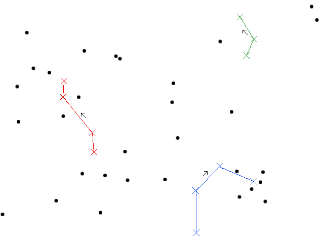
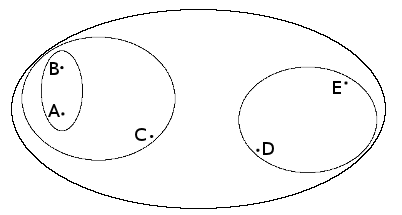
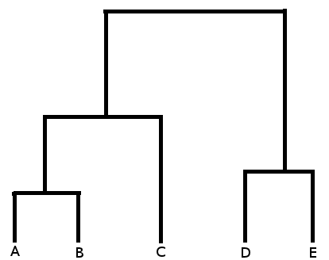
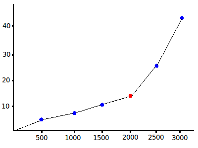
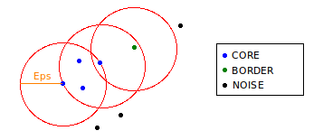
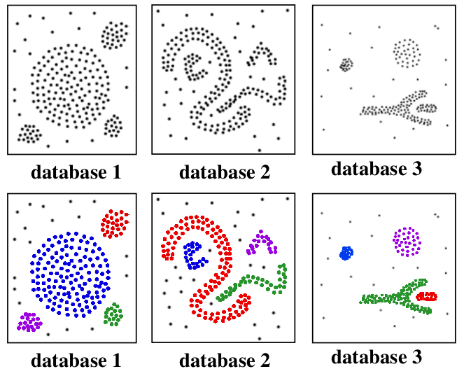

Clustering is a data mining strategy that groups objects by their natural similarity to one another. This is done by adaptively improving the mapping of objects to clusters such that all the objects in each cluster are highly similar to one another (cohesion) while being relatively different from the objects in other clusters; if this can be accomplished, then the clusters are said to be well separated. Not all clusterings necessarily need to meet this description; it may be acceptable for objects to be assigned to more than one cluster, or no cluster at all.
The process of clustering can be disrupted by the presence of noise and outliers in a dataset, and also by subtle differences in the size and density of the clusters that naturally exist in the data. As many object comparisons are necessary to find a good solution, clustering algorithms can be computationally expensive in terms of CPU time and memory usage. Finally, although clustering can be considered to be a form of unsupervised learning, the algorithms themselves need to be configured with the right set of parameters in order to produce good results; this tends to require an iterative process involving several runs of an algorithm in order to find the best configuration.
Several popular clustering strategies and their potential uses are described below, along with the strengths and weaknesses of each.
This prototype based approach begins with the selection of the number of clusters that are expected to result from the process, k. This number is then used to randomly or strategically generate k initial points to serve as the centroids of each cluster. Each object in the dataset is then assigned to the cluster of its nearest centroid, after which the location of each centroid is updated to reflect which objects have been assigned to it; this results in each centroid occupying the central location of its group. This process repeats as long as objects continue to be reassigned to different clusters.
Figure 1. Hypothetical paths of cluster centroids, for k=3.
From Figure 1, it's clear that the choice of k and the initial placement of each centroid can greatly affect the quality of the resulting clusters and the speed of convergence to a solution. In this light, K-means can be regarded as an optimization algorithm; the objective function is the sum of squared distances between the centroids and their assigned objects, also known as the Sum of Squared Errors:
$$SSE = \sum_{i=1}^{k}\sum_{x\in C_i}dist(c_i,x)^2$$
$C_i$: The set of objects in the $i$th cluster
$c_i$: The centroid of the $i$th cluster
K-means is a relatively efficient algorithm. However, it is by no means guaranteed to find the best solution, which is the natural set of clusters that exist in the data. Even when an effective strategy for choosing the initial conditions is used, this algorithm is sensitive to the presence of outliers, as Figure 1 demonstrates (green cluster). This problem can be addressed by removing outliers between experimental runs so as to minimize the total error, making this method generally effective for identifying globular clusters.
Below is a Python implementation of the algorithm which uses randomly generated initial centroids.
def kmeans(data, k=4, distance=distance.euclidean, prototype=prototype.rand):
#initialize a new clustering
result_clustering = clustering(data, clusters=[], centroids=prototype(data, k))
attributes = range(len(data[0]))
clusters_last = None
for t in range(1, 101):
result_clustering.clusters = [[] for i in range(k)]
#assign each object to the closest centroid
for object_num in range(len(data)):
obj = data[object_num]
assigned_cluster_num = random.choice(range(k))
for cluster_num in range(k):
d = distance(result_clustering.centroids[cluster_num], obj)
if d < distance(result_clustering.centroids[assigned_cluster_num], obj):
assigned_cluster_num = cluster_num
result_clustering.clusters[assigned_cluster_num].append(object_num)
#terminate the loop if the centroids list hasn't changed
if result_clustering.clusters == clusters_last: break
clusters_last = result_clustering.clusters
#recompute the centroid of each cluster
for i in range(k):
attr_averages = [0.0] * len(attributes)
if len(result_clustering.clusters[i]) > 0:
for object_num in result_clustering.clusters[i]:
for attr_num in attributes:
attr_averages[attr_num] += data[object_num][attr_num]
for attr_num in attributes:
attr_averages[attr_num] /= len(result_clustering.clusters[i])
result_clustering.centroids[i] = attr_averages
return result_clustering
This method works in a similar manner to Kruskal's algorithm for finding the minimum spanning tree of a weighted, connected graph; it initially treats each object as a cluster, and then successively merges those clusters that are nearest to one another until there is only one cluster.
Figure 2. Nested clusters discovered by hierarchical clustering.
The primary advantage of this approach is that it produces a hierarchical structure which describes how the data is organized. This structure is usually visualized with a dendrogram, which indicates both the structure and cohesiveness of each clustering, as Figure 3 demonstrates.
Figure 3. Dendrogram describing clusters shown in Figure 2.
The most significant weakness of hierarchical clustering is that it does not scale well to large datasets; the time complexity of this algorithm is $O(m^2\log m)$, where $m$ is the number of objects [1]. Additionally, like K-means, it does not identify non-globular clusters. Despite these drawbacks, this algorithm is preferred over K-means when the underlying application requires the creation of a hierarchy for descriptive purposes.
DBSCAN is a relatively complex and computationally intensive algorithm. However, it has some unique capabilities which can make it a valuable part of any data miner's toolkit. It accomplishes its task by using the density of the area surrounding each point to grow out contiguous regions of relatively high density. To understand the implementation of DBSCAN, it is helpful to consider the process as being composed of three stages: input parameter selection, object labeling, and cluster formation.
The algorithm functions based on two input parameters, $Eps$ and $MinPts$. As DBSCAN relies on these parameters to determine the density of the clusters it looks for, it's important that they be carefully selected. $MinPts$ is chosen by the analyst, which is used to determine $Eps$ by the following process ($MinPts=4$ is a reasonable first choice). Using a chosen distance metric, the nearest neighbors of each object in the dataset are discovered and ordered, and the distance of the neighbor that is $MinPts$ in that order is stored for later use. The stored distances are then sorted by magnitude; the result of this process is illustrated in Figure 4. The optimal choice for $Eps$ is then given by the distance for which the values increase most sharply, which can be determined either by the analyst or via numerical methods. This value corresponds to the knee of the fitted curve in Figure 4, which is indicated in red.
Figure 4. 4th nearest neighbor distances for 3000 objects, ordered by magnitude.
This phase of the algorithm is accomplished with two passes over the dataset. The first pass identifies CORE objects, which are those that have at least $MinPts$ other objects within a distance of $Eps$. The second pass discovers BORDER objects, which are those with at least one previously discovered CORE object within a distance of $Eps$. Finally, any remaining unlabeled objects in the dataset are considered NOISE objects. Figure 5 illustrates these distinctions.
Figure 5. Labeling of objects in DBSCAN.
The actual clustering of the objects is achieved by grouping the labeled objects by their proximity to one another. First, any CORE object which is within $Eps$ of another CORE object is assigned to the same cluster as that object; if none of the neighboring CORE objects have been assigned to a cluster yet, a new one is created and the object in question is assigned to it. Once all CORE objects have been assigned to clusters, all BORDER objects are assigned to the cluster of their nearest CORE object. All remaining unclustered objects have already been classified as NOISE and are therefore discarded.
The ability of this algorithm to specifically identify and filter out noise enables it to isolate arbitrarily shaped clusters, which can be useful for applications such as face recognition. Although the computation of nearest neighbors can be expensive, this issue can be mitigated with the use of appropriate data structures for storing the proximities. Figure 6 demonstrates the power of DBSCAN.
Figure 6. Clusters identified by DBSCAN.